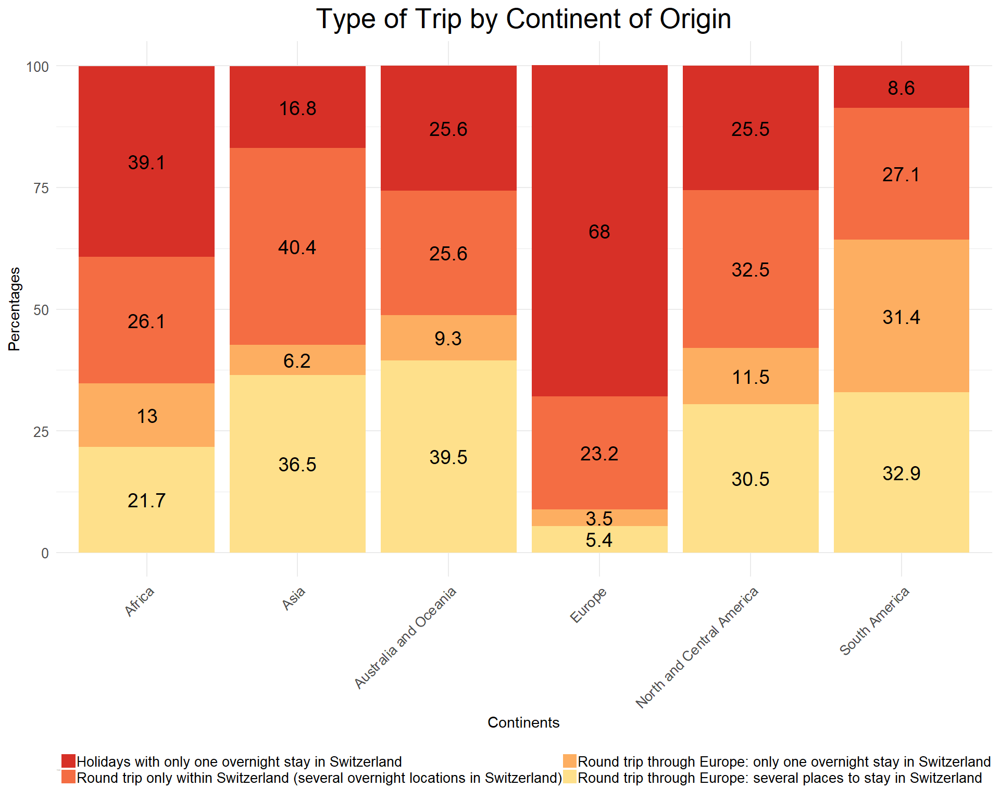
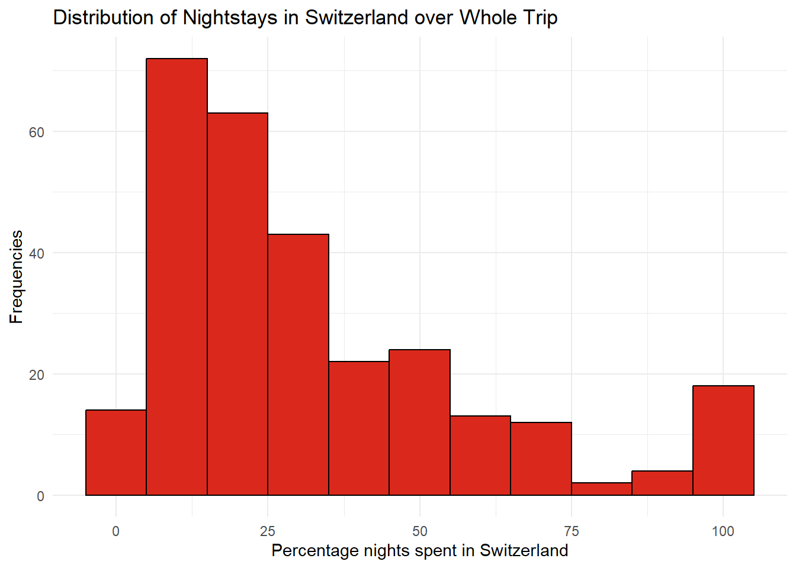
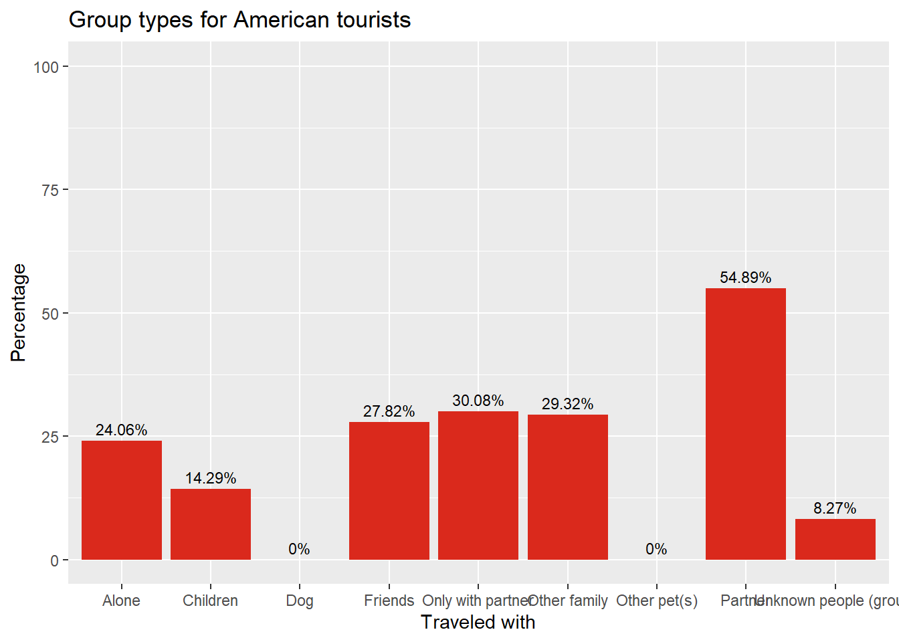

Code
source(here::here("scripts", "setup.R"))
data <- read.csv(here("data", "TMS_dataset_Vaud_20240314_FINAL.csv"),
sep = ",")source(here::here("scripts", "setup.R"))
data <- read.csv(here("data", "TMS_dataset_Vaud_20240314_FINAL.csv"),
sep = ",")Plot of the total number of days spent in Vaud per month of the year
Now let’s explore the number of day spend per month of the year in the canton of Vaud
### F12 & F13 ###
#Are we more interested in knowing when they came for holidays or how long?
#duration per month
data <- data %>%
mutate(
# Convert to date format first
date_column = dmy(F12),
# If you want the month names instead
month_name_column = month(date_column, label = TRUE, abbr = FALSE) # Set abbr=FALSE for full month names
)
#order
desired_order <- c("Serial2",
"F05_01",
"F05_01_ENG",
"F05_02",
"F05_02_ENG",
"F05_03",
"F05_04",
"F12",
"F13",
"month_name_column",
"hFerienDauer")
remaining_columns <- setdiff(names(data), desired_order)
new_order <- c(desired_order, remaining_columns)
data <- data[, new_order]
# nb of days per month
nb_days_per_month <- data %>%
select(F12, F13, month_name_column, hFerienDauer) %>%
group_by(month_name_column) %>%
summarize(total_hFerienDauer = sum(hFerienDauer, na.rm = TRUE))
nb_days_per_month <- nb_days_per_month %>%
mutate(season = case_when(
month_name_column %in% c("December", "January", "February") ~ "Winter",
month_name_column %in% c("March", "April", "May") ~ "Spring",
month_name_column %in% c("June", "July", "August") ~ "Summer",
month_name_column %in% c("September", "October", "November") ~ "Fall",
TRUE ~ NA_character_ # for any month names not matched or NA values
))
#plot
ggplot(nb_days_per_month, aes(x = month_name_column, y = total_hFerienDauer, fill = season)) +
geom_bar(stat = "identity") +
geom_smooth(aes(group = 1), method = "loess", se = FALSE, color = "red", linetype = "dashed") +
scale_fill_manual(values = c("Winter" = "blue", "Spring" = "green", "Summer" = "purple", "Fall" = "orange")) +
theme_minimal() +
labs(x = "Months", y = "Sum Holiday Durations", title = "Total Holiday Duration by Month", fill = "Season") +
theme(axis.text.x = element_text(angle = 45, hjust = 1))
We clearly see two major moment of the year were there is a rise in the number of days spent in Vaud: March and July.
Now let’s explore the percentage of trip category per continent. In the survey, the visitors were asked the type of trip they were having. Therefore, you will find here the graph of the distribution of the type of trip for each continent. The choice was made among 4 possibilities that are explained in the legend of the graph.
ggplot(trip_percentages, aes(x = F05_01_ENG, y = Percentages, fill = F16_ENG)) +
geom_bar(stat = "identity") +
labs(x = "Country", y = "Percentages", fill = "Type of Trip") +
ggtitle("Stacked Bar Plot of Type of Trip by Country") +
scale_fill_manual(values = my_colors) + # Use your defined colors here
geom_text(aes(label = Percentages), position = position_stack(vjust = 0.5), size = 5) +
theme_minimal() +
theme(axis.text.x = element_text(angle = 45, hjust = 1, size = 10),
axis.text.y = element_text(hjust = 1, size = 10),
legend.text = element_text(size = 9),
legend.title = element_text(size = 0),
#legend.box = "vertical",
legend.position = "bottom",
legend.key.size = unit(0.4, "cm")) +
guides(fill = guide_legend(nrow = 2, title = "Options"))
In general, we notice that most of the visitors coming from continent far away from Switzerland are coming in Switzerland for serveral nightstays during their trip in Europe. On another hand, living closer, are staying most of the time for one overnight stay in Switzerland. This is probably due to the large quantity of visitors surveyed coming from Switzerland but from other cantons or visitors coming from adjacent countries such as Germany in France, all these visitors accounting for a total of approx. 50% of the people surveyed.
Global frenquency of nightstays in Switzerland
Here are the distribution of the frequencies of the number of night spent during a trip in Switzerland.
### F20 ###
# Careful here: some people have 0 nightstay and only passed by switzerland for a day.
# but answered the question 16, asking about the number of nights.
# also when f16 answered and F20 blanc ---> change NAs by 1
data_NAs <- data %>%
mutate(F20 = ifelse(is.na(F20), 1, F20))
F20_freq <- data_NAs %>%
group_by(F20) %>%
summarize(Count = n(), .groups = 'drop') %>%
arrange(desc(Count)) # Optional: arrange in descending order of frequency
ggplot(F20_freq, aes(x = F20, y = Count, fill = F20)) +
geom_bar(stat = "identity") +
theme_minimal() +
labs(x = "Number of nights", y = "Frequency", title = "Frequency of the number of nights in Vaud") +
theme(axis.text.x = element_text(angle = 45, hjust = 1), # Improve readability of x-axis labels
legend.title = element_blank()) # Hide the legend if not needed
As the question asked to the visitor was the number of night spent in Switzerland, it is difficult to know how many nights were spent in the Canton of Vaud. Therefore, we have decided here to take into account in our analysis the global number of night in the country. In addition, as most of our data contained NAs because of the structure of the survey (according to the answer of the question F16, some people could not answer question F20, therefore their answer was reported as a NA). Thus, we have decided to count the NAs as 1 overnight stay, as it is not possible to know if they only stayed in Vaud for 1 day without staying overnight.
We can therefore see that most of the visitors only spend in general 1 night in the canton, and few people in comparison are staying more than a week.
Now let’s explore the percentage of the number of days spent in Switzerland over the whole visitors’ trip.
### F21 ###
#consider NA as 0 here.
# if F20 and F21 not NAs --> take percentage of nightstays in Switzerland compared to the total length of the trip
# Add a new column with the percentage of night stays in Switzerland over the total trip night stays
data2 <- data %>%
mutate(Percentage_Night_Stays_Switzerland = ifelse(is.na(F20) | is.na(F21), NA, (F20 / F21) * 100))
ratio_nightstays_CH_EU <- data2 %>%
select(F20,F21, Percentage_Night_Stays_Switzerland) %>%
group_by() %>%
drop_na()
# Create the distribution histogram
ggplot(ratio_nightstays_CH_EU, aes(x = Percentage_Night_Stays_Switzerland)) +
geom_histogram(binwidth = 10, fill = "skyblue", color = "black") +
labs(
title = "Distribution of the percentage of nightstays in Vaud over the whole trip",
x = "Percentage Night Stays",
y = "Frequency"
) +
theme_minimal()
As this graph shows, we notice that over the whole trip, most of the people will stay around 20% of their trip in Switzerland.
### F30 ###
F30_Q <- data %>% count(F30_ENG, name = "Total")
F30_Q$percentage <- with(F30_Q, Total / sum(Total) * 100)
ggplot(F30_Q, aes(x = F30_ENG, y = Total, label = paste(percentage, "%"))) +
geom_bar(stat = "identity", fill = "skyblue") +
geom_text(vjust = -0.5, color = "black") +
theme_minimal() +
labs(title = "Q30: Have you booked a package tour?",
x = "Answers",
y = "Total")
Now let’s explore the distribution of the arrivals per nationality over the year:
### Deeper reasoning ###
# Where are coming from the people, per month
# Summarize data: count arrivals per month and country
monthly_arrivals <- data %>%
group_by(month_name_column, F05_02_ENG) %>%
summarise(Count = n(), .groups = 'drop') %>%
arrange(month_name_column, F05_02_ENG) # This will ensure the data is ordered, which might help in visualization
# total per country
per_country <- monthly_arrivals %>%
select(F05_02_ENG, Count) %>%
group_by(F05_02_ENG) %>%
mutate(total = sum(Count)) %>%
select(-c(Count))
per_country <- per_country %>%
distinct()
#left join
result <- left_join(monthly_arrivals, per_country, by = "F05_02_ENG") %>%
distinct()
# Visualize
ggplot(result, aes(x = month_name_column, y = `F05_02_ENG`, size = Count/total)) +
geom_point(alpha = 0.7) + # Using alpha for better visibility if points overlap
theme_minimal() +
labs(title = "Monthly Arrivals in Switzerland by Country of Origin",
x = "Month",
y = "Country of Origin",
size = "Number of Arrivals") +
theme(axis.text.x = element_text(angle = 45, hjust = 1))
datatable(per_country, options = list(pageLength = 10,
class = "hover",
searchHighlight = TRUE), rownames = FALSE)On this graph, we notice that the size of the dots, representing the monthly number of arrivals of a nationality over the total number of arrival of this particular nationality, yearly, are variating a lot according to the nationality. Unfortunately, due to the low number of data surveyed, some countries are only represented once over the whole year.
#Plot frequency
ggplot(df_sums_df, aes(x = Column, y = Spent)) +
geom_bar(stat = "identity", fill = "skyblue") +
geom_text(aes(label = paste0("CHF ", round(Spent, 0))), vjust = -0.5, size = 3, color = "black") +
labs(title = "Average CHF spent by group type", x = "Traveled with", y = "Amount spent / person")
Here we have calcuated the average total CHF spent during a trip to Vaud, per person, depending on who the respondent has traveled with.
# Type of groups x Country of origin
# Create bin columns for top 5 countries
data$swiss <- ifelse(data$F05_02 == "Schweiz", 1, 0)
data$french <- ifelse(data$F05_02 == "Frankreich", 1, 0)
data$british <- ifelse(data$F05_02_ENG == "United Kingdom", 1, 0)
data$german <- ifelse(data$F05_02 == "Deutschland", 1, 0)
data$american <- ifelse(data$F05_02_ENG == "United States of America", 1, 0)
# Add columns to df
df$swiss <- data$swiss
df$french <- data$french
df$british <- data$british
df$german <- data$german
df$american <- data$american
# Create new df
column_names <- c("column_name", "group_name", "swiss", "french", "british", "german", "american")
rows <- c("Alone", "Partner", "Friends", "Children", "Other family",
"Unknown people (group)", "Dog", "Other pet(s)", "Only with partner")
nations_groups <- data.frame(matrix(ncol=length(column_names), nrow = length(rows)))
colnames(nations_groups) <- column_names
nations_groups$group_name <- rows
nations_groups$column_name <- colnames(df)[1:nrow(nations_groups)]
# Initialize a list to store sums for each nation
sums_list <- list()
# Iterate over each row in nations_groups dataframe
for (i in 1:nrow(nations_groups)) {
# Get the column name and group name from the current row
column_name <- nations_groups[i, "column_name"]
group_name <- nations_groups[i, "group_name"]
# Calculate sum for each nation
sums <- c(
sum(df[df$swiss == 1, column_name], na.rm = TRUE),
sum(df[df$french == 1, column_name], na.rm = TRUE),
sum(df[df$british == 1, column_name], na.rm = TRUE),
sum(df[df$german == 1, column_name], na.rm = TRUE),
sum(df[df$american == 1, column_name], na.rm = TRUE)
)
# Add sums to the list
sums_list[[i]] <- c(group_name, column_name, sums)
}
# Convert the list to a dataframe
sums_df <- as.data.frame(do.call(rbind, sums_list))
# Add column names to the dataframe
colnames(sums_df) <- c("group_name", "column_name", "swiss", "french", "british", "german", "american")
# Transform to percentages
sums_df$swiss <- round(100*as.numeric(sums_df[, "swiss"])/sum(df$swiss == 1), 2)
sums_df$french <- round(100*as.numeric(sums_df[, "french"])/sum(df$french == 1), 2)
sums_df$british <- round(100*as.numeric(sums_df[, "british"])/sum(df$british == 1), 2)
sums_df$german <- round(100*as.numeric(sums_df[, "german"])/sum(df$german == 1), 2)
sums_df$american <- round(100*as.numeric(sums_df[, "american"])/sum(df$american == 1), 2)
# Print the resulting dataframe
#print(sums_df)
# Plot group types by nationHere we can see the group types of travelers (Alone, with partner, with children, etc.) For each of the top 5 nations of origin of tourists.
ggplot(sums_df, aes(x = group_name, y = swiss)) +
geom_bar(stat = "identity", fill = "skyblue") +
ylim(0, 100) +
labs(title = "Group types for Swiss tourists", x = "Traveled with", y = "Percentage") +
geom_text(aes(label = paste0(swiss, "%")), vjust = -0.5, size = 3)
Swiss tourists are more likely than other nations to travel with children. They are also most likely to be traveling with a partner, and pets. This suggests that they are more likely to be visiting as a family than other tourists.
ggplot(sums_df, aes(x = group_name, y = french)) +
geom_bar(stat = "identity", fill = "skyblue") +
ylim(0, 100) +
labs(title = "Group types for French tourists", x = "Traveled with", y = "Percentage") +
geom_text(aes(label = paste0(french, "%")), vjust = -0.5, size = 3)
ggplot(sums_df, aes(x = group_name, y = british)) +
geom_bar(stat = "identity", fill = "skyblue") +
ylim(0, 100) +
labs(title = "Group types for British tourists", x = "Traveled with", y = "Percentage") +
geom_text(aes(label = paste0(british, "%")), vjust = -0.5, size = 3)
ggplot(sums_df, aes(x = group_name, y = german)) +
geom_bar(stat = "identity", fill = "skyblue") +
ylim(0, 100) +
labs(title = "Group types for German tourists", x = "Traveled with", y = "Percentage") +
geom_text(aes(label = paste0(german, "%")), vjust = -0.5, size = 3)
German tourists are the most likely of these countries to be traveling only with their partner, as a couple.
ggplot(sums_df, aes(x = group_name, y = american)) +
geom_bar(stat = "identity", fill = "skyblue") +
ylim(0, 100) +
labs(title = "Group types for American tourists", x = "Traveled with", y = "Percentage") +
geom_text(aes(label = paste0(american, "%")), vjust = -0.5, size = 3)
American tourists have by far the highest percentage of tourists traveling alone, as well as in a group of unknown people. This suggests they are more likely to be on a solo trip to Switzerland, and also be in an organised group tour with other strangers.